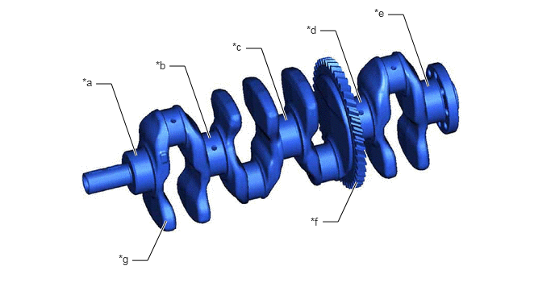
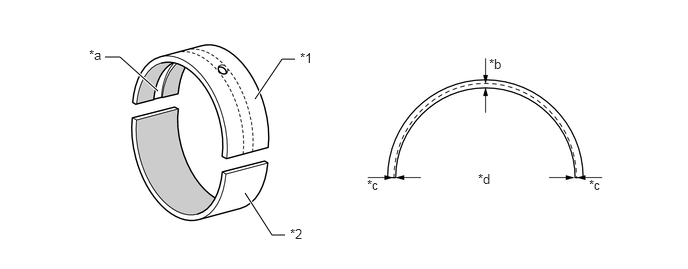

NM35K0CC
_51
发动机/混合动力系统
_079482
A25A-FKS 发动机机械部分
_0385281
发动机单元
DE
详情
F
A25A-FKS 发动机机械部分 发动机单元 详情 曲轴和轴承
构造
a.
优化了曲轴设计，以减轻重量。
b.
曲轴有 5 个主轴颈和 8 个平衡配重。
c.
曲轴上配备了平衡轴主动齿轮。

4.135,0.396 4.333,0.396
4.333,0.396 4.656,1.323
true
5.01,0.188 5.208,0.188
5.208,0.188 5.531,1.115
true
3.177,0.625 3.375,0.625
3.375,0.625 3.698,1.552
true
2.188,0.854 2.385,0.854
2.385,0.854 2.708,1.781
true
1.24,1.083 1.438,1.083
1.438,1.083 1.76,2.01
true
1.708,3.365 1.906,3.365
1.906,3.365 2.146,2.854
true
4.167,2.865 4.365,2.865
4.365,2.865 4.604,2.354
true
1.063,0.979 1.375,1.135
0.313,0.156
10
false
*a
2.01,0.76 2.323,0.917
0.313,0.156
10
false
*b
3,0.521 3.313,0.677
0.313,0.156
10
false
*c
3.958,0.302 4.271,0.458
0.313,0.156
10
false
*d
4.833,0.083 5.146,0.24
0.313,0.156
10
false
*e
4.01,2.781 4.323,2.938
0.313,0.156
10
false
*f
1.531,3.26 1.771,3.51
0.24,0.25
10
false
*g
| *a | 1 号主轴承轴颈 | *b | 2 号主轴承轴颈 |
| *c | 3 号主轴承轴颈 | *d | 4 号主轴承轴颈 |
| *e | 5 号主轴承轴颈 | *f | 平衡轴主动齿轮 |
| *g | 平衡配重 | - | - |
d.
曲轴轴承上的偏心机油槽用于减少轴承的漏油量。这样可减小机油泵容积，以降低附加损耗。
e.
曲轴轴承采用由树脂涂抹的铝制曲轴轴承。
f.
考虑到环境问题，曲轴和曲轴轴承采用无铅材料。

2.656,1.031 2.938,0.615
2.938,0.615 3.073,0.615
true
1.094,0.594 1.25,0.594
1.25,0.594 1.646,0.948
true
2.552,2.01 2.833,2.448
2.833,2.448 2.969,2.448
true
3.125,0.521 3.438,0.677
0.313,0.156
10
false
*1
3.021,2.354 3.333,2.51
0.313,0.156
10
false
*2
0.927,0.49 1.24,0.646
0.313,0.156
10
false
*a
5.094,0.583 5.406,0.74
0.313,0.156
10
false
*b
4.979,1.781 5.292,1.938
0.313,0.156
10
false
*d
3.823,1.844 4.135,2
0.313,0.156
10
false
*c
6.135,1.844 6.448,2
0.313,0.156
10
false
*c
| *1 | 上主轴承（曲轴轴承） | *2 | 下主轴承（曲轴轴承） |
| *a | 机油槽 | *b | 中央 |
| *c | 边缘 | *d | 机油槽深度 |

|
树脂涂层 | - | - |